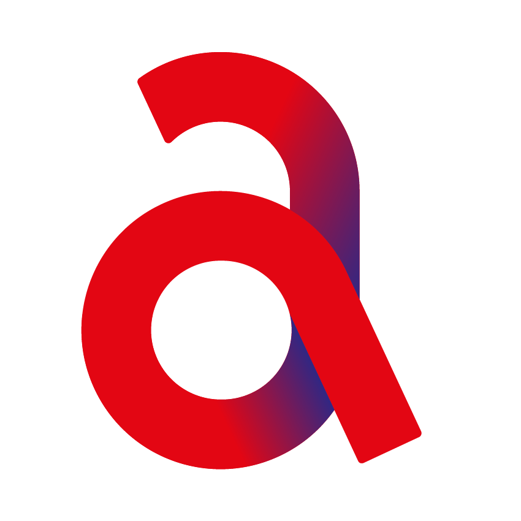

CPR AR MISSION
Interactive Training with AI Detection
1. AI Scanner: We use PoseNet to detect the body.
2. Marker: Aim camera at the HIRO marker.
3. Mapping: Guidance will appear on the victim's chest.
MISSION COMPLETE
You have mastered the CPR cycle effectively.
Repeat 30:2 cycle until help arrives or the person recovers